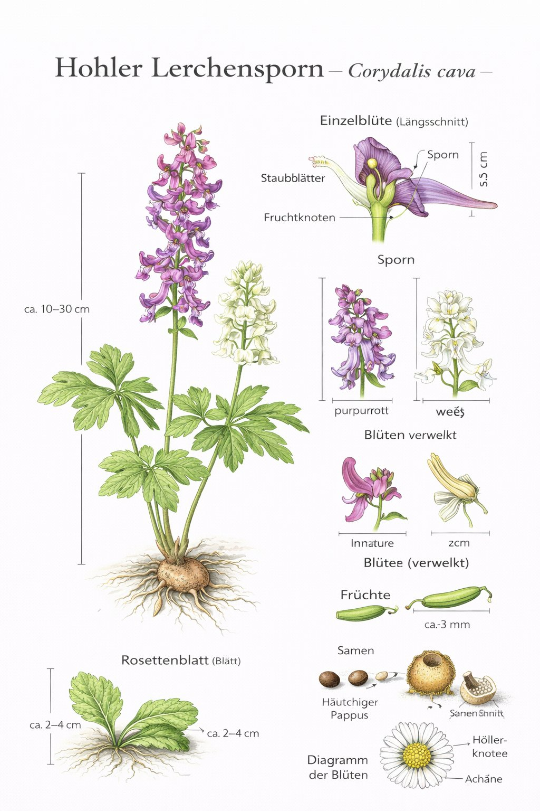

Nr. 5 · Frühblüher im Wald
Hohler Lerchensporn
Corydalis cava
Grösser, früher, unterirdisch reicher – der grosse Bruder.

Der Untergrund-Spezialist
Die Überwinterungsknolle des Hohlen Lerchensporns ist tatsächlich hohl – ein einzigartiges Merkmal. Im Inneren liegt ein Hohlraum, der sich jedes Jahr vergrössert, während die Knolle aussen wächst. Eine Knolle kann mehrere Jahrzehnte alt werden. Als echter Frühjahrsgeophyt verbraucht er seinen gespeicherten Energievorrat für einen blitzschnellen Start im Frühjahr.
Bestäubung & Ameisenpost
Der Nektar liegt tief im Sporn – zugänglich nur für langrüsselige Hummeln. Seine Samen tragen Elaiosomen (ölreiche Anhängsel), die Ameisen anlocken. Die Samen werden so bis zu 70 Meter weit transportiert. Myrmekochorie heisst dieser Mechanismus – ein Millionen Jahre altes Transportsystem, das noch immer reibungslos funktioniert.
Wissenswertes & Merksätze
Hohl oder voll
Am sichersten durch die Knolle unterscheiden: hohl = Hohler Lerchensporn, voll = Gefingerter. Im Feld hilft auch das Deckblatt: Hohler = ungeteilt, Gefingerter = geteilt.
Farbvariation
Die Blüten variieren von reinweiss über rosa bis tief purpur – manchmal alle Farben nebeneinander an einem Standort.
Frühjahrszeiger
Dichte Bestände zeigen nährstoffreiche, basenreiche Böden an – oft in alten Parkanlagen und Klostergärten, wo der Boden seit Jahrhunderten ungestört ist.